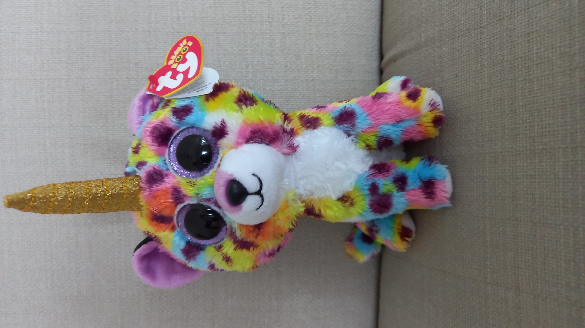

Her horn makes her stand out!
In 2013, Giselle was born! But she didn't look the same as she does now.
She used to look like her sister Livvy, but all of the pink parts were purple.
One day, she was asked to take pictures of a science experiment. She was bitten by a radioactive animal and... yeah.
2. She's the only kid in her family who has fully grown spots!
She used to look like her sister Livvy, but all of the pink parts were purple.
One day, she was asked to take pictures of a science experiment. She was bitten by a radioactive animal and... yeah.
Fun Facts:
1. She's the only one with a horn in her family!
2. She's the only kid in her family who has fully grown spots!